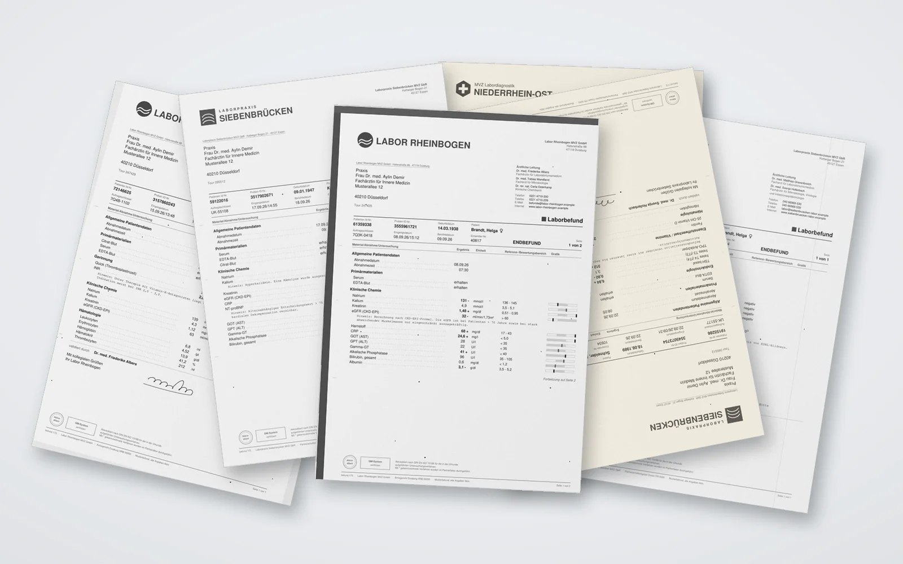
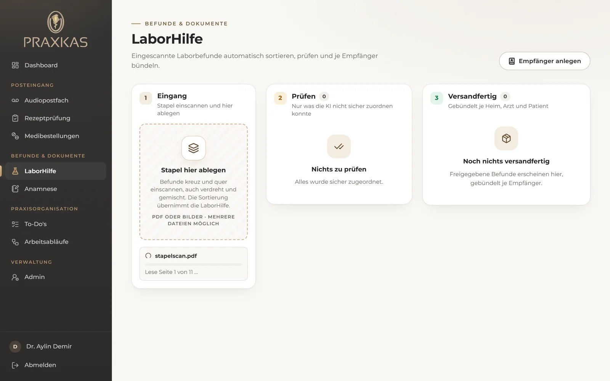
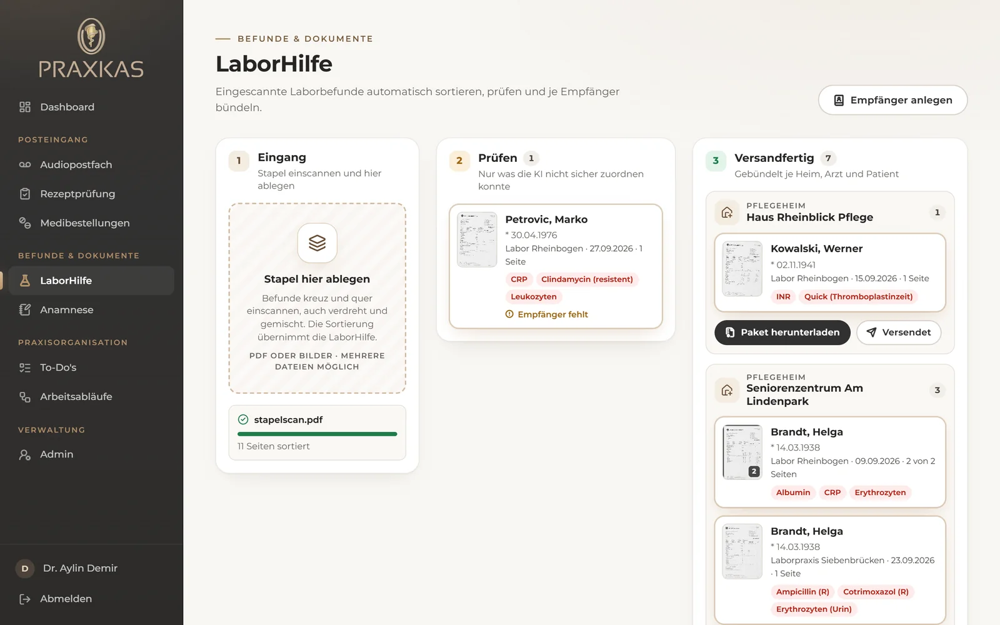
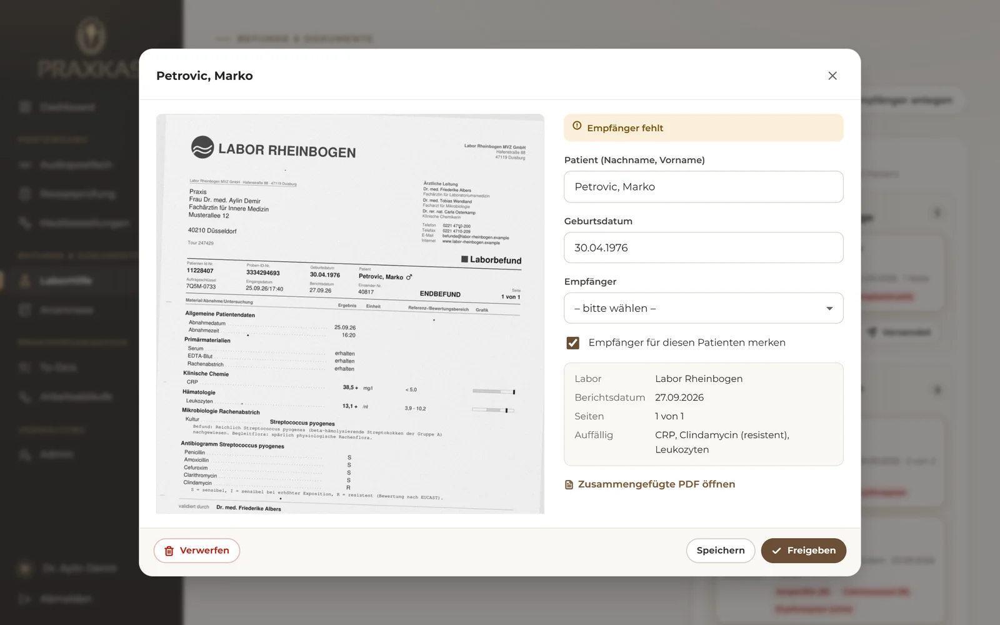
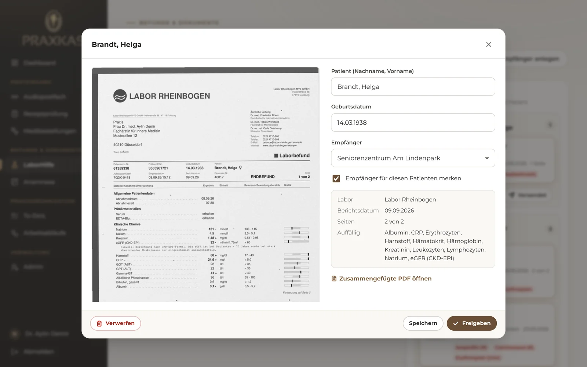
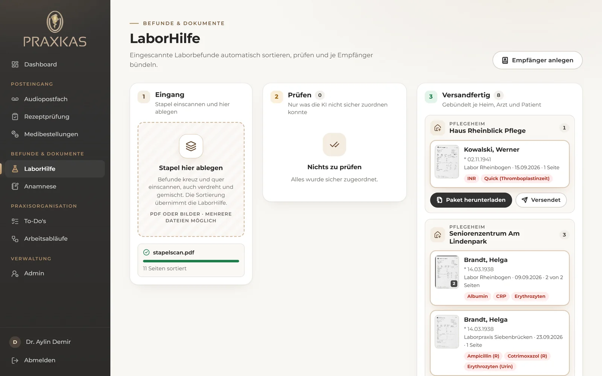
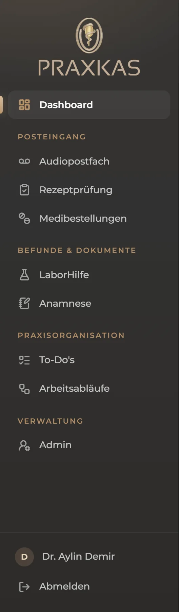

Sie legen die Laborbefunde so in den Scanner, wie sie kommen: gemischt, verdreht, Seite 2 vor Seite 1. Die LaborHilfe erkennt, welche Seite zu welchem Patienten gehört, fügt sie zusammen und legt jeden Befund für das richtige Heim, den richtigen Arzt oder den Patienten bereit.
ⓘAlle Namen, Labore und Werte in diesem Dokument sind ausgedacht. Die Screenshots stammen aus einem echten Durchlauf der App mit diesen Musterbefunden.

Laborbefunde kommen auf Papier, für viele Patienten auf einmal. Jeder Befund muss an die richtige Stelle: ins Heim, an den mitbehandelnden Arzt oder direkt an den Patienten.
Alle Befunde des Tages durch den Scanner und die Datei in die LaborHilfe ziehen. Reihenfolge, Ausrichtung und Anzahl spielen keine Rolle.
Sie erkennt Patient, Geburtsdatum, Labor, Befunddatum und die Seitenangabe wie „1 von 2“. Verdrehte Seiten werden aufgerichtet, zusammengehörige Seiten zu einem Befund.
Die Befunde liegen gebündelt nach Heim, Arzt und Patient. Ein Klick lädt das Paket für einen Empfänger herunter, ein zweiter hakt es als versendet ab.
Der Stapel oben enthält acht ausgedachte Befunde von drei Laboren für sechs Patienten. Drei Befunde haben zwei Seiten. Die Seiten sind so gemischt, dass keine Folgeseite neben ihrer ersten Seite liegt. Eine Seite liegt auf dem Kopf, zwei sind schief eingezogen.
Die LaborHilfe vor dem Einscannen. Links wird der Stapel abgelegt, in der Mitte erscheint nur, was geprüft werden muss, rechts liegen die fertigen Befunde.

Der Stapel wird gelesen. Mehrere Seiten werden gleichzeitig bearbeitet. Währenddessen kann weitergearbeitet werden.

Das Ergebnis. Alle elf Seiten sind den richtigen Patienten zugeordnet, die drei zweiseitigen Befunde vollständig zusammengefügt und die kopfstehende Seite aufgerichtet. Sieben Befunde liegen versandfertig beim richtigen Heim, beim Hausarzt oder beim Patienten selbst.

Nur was offen ist, landet bei Ihnen. Ein Patient war neu, deshalb fehlte der Empfänger. Einmal auswählen und freigeben, beim nächsten Befund dieses Patienten ist er schon hinterlegt.

Zusammengefügt und aufgerichtet. Seite 1 und Seite 2 lagen im Stapel weit auseinander. Die LaborHilfe hat sie über Patient, Datum und „1 von 2“ gefunden und zu einer PDF verbunden.

Alles versandfertig. Jede Gruppe hat ein Paket zum Herunterladen, die Dateien sind einheitlich benannt: Patient, Datum, Labor. Die Zuordnung eines neuen Patienten merkt sich die LaborHilfe für das nächste Mal.
Für die Musterbefunde gibt es eine Lösung, welche Seite zu wem gehört. Das Ergebnis der LaborHilfe wurde automatisch damit verglichen.

Die neue Seitenleiste.
Praxkas ist jetzt nach dem gegliedert, was in der Praxis passiert: was von außen hereinkommt, was an Befunden und Dokumenten anfällt, und was das Team organisiert.
Scans und fertige PDFs liegen auf dem Praxisrechner, auf dem Praxkas läuft. Abrufen kann sie nur, wer in Praxkas angemeldet ist.
Zum Erkennen wird jede Seite einzeln an die KI von Anthropic geschickt, dieselbe, die heute schon die Anrufbeantworter-Nachrichten zusammenfasst. Dafür besteht ein Auftragsverarbeitungsvertrag, der regelt, wie die Daten dort behandelt werden.
Heute wird das Paket je Empfänger heruntergeladen. Als Nächstes kann die LaborHilfe die Befunde selbst per E-Mail oder Fax an Heim, Arzt oder Patient schicken.
Die Praxis-Postfächer sind verbunden. Als Nächstes können Befunde, die per E-Mail kommen, ohne Scanner direkt im Eingang landen. Dieselbe Anbindung ist die Grundlage für Medibestellungen und Rezeptprüfung.
Bestellungen am Bildschirm abhaken und mit Hinweisen zur Verfügbarkeit versehen, statt sie auszudrucken und von Hand zu bearbeiten.
Kontaktdaten neuer Patienten aus der E-Mail übernehmen, statt sie von Fotos abzutippen. Später auch direkt in die Praxissoftware.